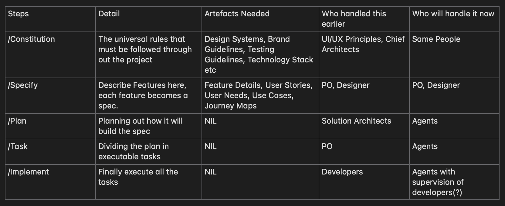
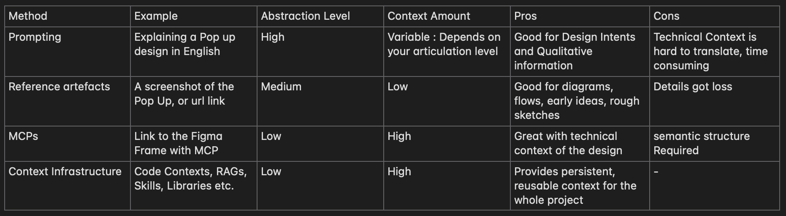

Introduction
With Spec‑Driven Development at the agentic forefront, it may appear that designers no longer have a significant role—especially in organizations with a mature, full‑fledged design system. This assumption is partially true if we look only at the traditional deliverables of designers today. In an SDD paradigm, designers no longer merely hand off mockups or prototypes. Instead, they co‑author the specification, which becomes the single source of truth for the product. The designer’s responsibility shifts toward expressing design intent with greater precision — encoding user behavior, UI state changes, and system reactions in a way that is unambiguous and machine‑understandable.
This is the shift I explore in this article: designers must learn a new declarative language—an amalgamation of user behavior and UI response. The former is something designers already excel at. The latter represents a new kind of deliverable, one that bridges design thinking and system logic. Far from diminishing the designer’s role, Spec‑Driven Development elevates it—moving designers closer to the core of how software is conceived, specified, and built.
What is SDD?
For decades, software architecture has operated under a largely unchallenged assumption that code is the ultimate authority. Architecture diagrams, design documents, interface contracts, and requirement specifications all existed to guide implementation. Because code was the hardest thing to do, to change and maintain that took much effort. SDD inverts this relationship entirely. The problems with vibe coding or coding in natural language led to a more structured way of maintaining memory around prompts and product specification. One such approach is what Github launched last year was Spec Driven Development. As the name suggest it is a Agentic Software Development approach but driven completely by Specs or Specifications. These specs are nothing but detailed guidelines, product documentations, user stories, task lists, and all the necessary processes that any developer or architect in a team follows in the SDLC, just that it is documented in a way that becomes a directive principles for the agents. When something is asked to it, instead of going haywire or hallucinating it refers to these specs and stay in a defined process or boundary.
The specification becomes the authoritative definition of system reality, and implementations are continuously derived, validated, and, when necessary, regenerated to conform to that specification
SDD’s can be implemented in any of your agentic code editor, upon installing, you need to describe your project(a PRD would be better), set some universal guidelines(which is called Constitution) and start it. It has 5 steps or 5 commands, each command does one job of a person or a team. These steps are,

As you can see Designers still have a seat at the table, but it has evolved. Let’s discuss that in detail now…
How does it change our way of working
So How does it impact us? Articulating your designs to AI in a more logical and machine understandable natural language, will unlock a superpower for designer. You are now in a position to impact the final product rather transferring your intent to a developer to build, which not only remove the developer handoff frictions, it might end it completely. There will be nothing to handoff. That’s where the deliverables changes, and your process to deliver those artefacts changes as well. For example a small card content loading animation. You as designer have designed the component, animated the actions and behaviours, Then you demoed it to the developer and he understands the intent and behaviour and implement the UI in code. Today, this intent can be understood by the LLMs in a second, it just need the context and details. You give that in a language which is amalgamation of the user behaviour and UI behaviour. And Bingo! All the friction and effort in between goes away. Preserving Intent in an Automated Architecture like SDD becomes a necessity. All that matters in the more context it gets the more accurate it will be. There are three context giving method for any design to development process exits at presence.

The output of the system relies on a Foundational Context Infrastructure Layer (codebase, design system, and documentation) combined with Interaction Context (user prompts, visuals, and actual designs) to generate accurate outputs. This is a one-time setup that persists across the project and acts as a shared source of truth. It establishes consistent design principles, component structures, and implementation constraints across all features and screens. In contrast, Interaction Context is provided at the time of use. This includes prompts, visuals references, and design inputs (such as Figma MCP). It adds task-specific detail and helps the AI generate outputs tailored to a particular screen, flow, or interaction. In practice, designers should combine these methods to express context more effectively, as all of them has their own strengths and weaknesses.The age of well crafted softwares
Problems still needs to be defined. Experience still needs to be designed. These two things are the core and the surface, what in between them will be handled by AI. The problem that you are solving will come from the real world where AI still can’t reach as of now, and the solution which also will be used by the real world always need cater to real humans, where quality is still a non negotiable, even users expectations will increase, as the benchmark of software build by Agents has already reached a good level. Be it taking care of consistency, accessibility guidelines, standard UX patterns, visual hierarchy — all these are taken care by the AI to a acceptable level so that you can focus on bringing more creative, more intuitive, more personalised designs on the table. You will bring good taste, better user understanding, and innovative interface logics. That’s how as designer we need to uplift what AI is already doing. And by doing so we’ll move towards the desirability factor to our softwares.
Problems still needs to be defined. Experience still needs to be designed. These two things are the core and the surface, what in between them will be handled by AI. The problem that you are solving will come from the real world where AI still can’t reach as of now, and the solution which also will be used by the real world always need cater to real humans, where quality is still a non negotiable, even users expectations will increase, as the benchmark of software build by Agents has already reached a good level. Be it taking care of consistency, accessibility guidelines, standard UX patterns, visual hierarchy — all these are taken care by the AI to a acceptable level so that you can focus on bringing more creative, more intuitive, more personalised designs on the table. You will bring good taste, better user understanding, and innovative interface logics. That’s how as designer we need to uplift what AI is already doing. And by doing so we’ll move towards the desirability factor to our softwares.
SDD imposes a superior role to humans which is to use our cognitive abilities to govern how softwares are made.
The traditional craft of software engineering will move towards a more abstract layer which the machines can’t really own. And here the tastes of designers will play a vital role in shaping the experiences of users. In a world where everyone can build decent softwares, the value of well crafted softwares will always keep increasing. And this has to come from minds that continuously get inspired, innovate and brings personality to their craft.